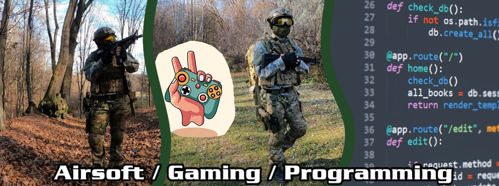
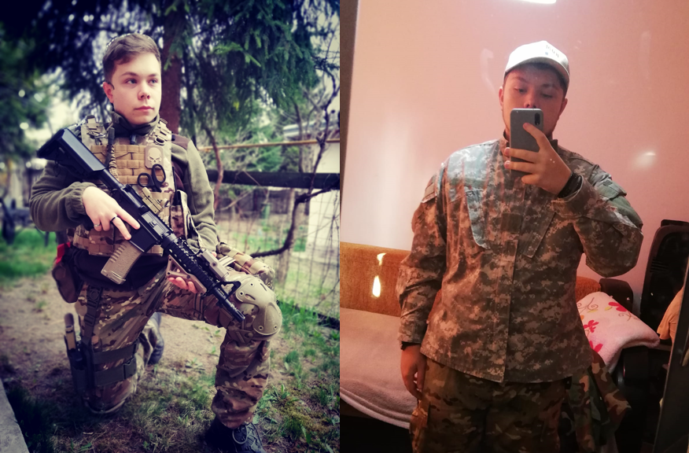
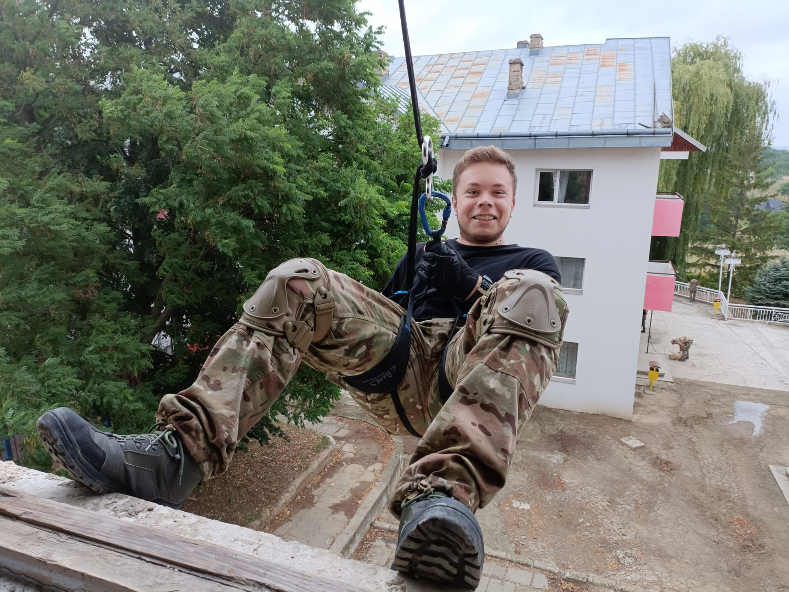

Pasiuni și Hobby-uri
Gaming
Pot spune că am prins gustul jocurilor pe calculator ca orice copil, când am primit o unitate veche, pe care mă puteam juca doar în browser. Trebuie să recunosc că la început îmi era o oarecare frică de calculator, fugeam de el cât de repede puteam, însă după ce am înțeles cum stă treaba și cum funcționează am început să fiu de nedezlipit de el. Cu timpul am învățat nu numai să mă joc, ci să încep să modific anumiți parametri ai jocurilor pentru a-mi oferi rezultate care m-ar fi ajutat sau pentru purul meu amuzament. Așa am învățat să îmi instalez jocuri, am învățat chiar o bună parte din limba engleză datorită acestora, și am învățat diverse limbaje de programare pentru a-mi oferi o largă zona de lucru.
Airsoft
 Am prins drag de sportul de airsoft în vara anului 2021, când am decis să particip la o tabără militară pentru o săptămână. Acolo am învățat baza utilizării unui echipament medical, am învățat să fac rapel de la etajul unei clădiri, am învățat să mânuiesc o replică de airsoft care este apropiată de o armă reală. Faptul că am participat la această tabără mi-a format o viziune nouă, am învățat să fiu mai responsabil, am avut parte de experiențe frumoase în momentele în care trebuia să ies seara pe afară pentru a execută un planton, am avut ocazia de a folosi și a monta un aparat de stingere a incendiilor, am avut parte de o prezentare generală a echipamentelor polițiștilor din cadrul Jandarmeriei și a brigăzii Anti-Tero, am putut să îmi dezvolt o pasiune nouă, iar acum, doi ani mai târziu sunt un membru al clubului CSABT (Club Sportiv Airsoft Botoșani) și particip la jocuri și antrenamente diverse alături de ei.
De asemenea, nu voi regreta niciodată decizia de a lua parte la acea tabără de airsoft și de a deveni un membru al clubului deoarece aici m-am maturizat mai tare și am descoperit frumusețile pe care mi le oferă natura în momentul în care studiez liniștea prea suspectă pentru mediul în care mă aflu.
Programarea
Programarea a devenit o pasiune în momentul în care mă jucam și am început să descopăr faptul că pot modifica linii în codul sursă al jocului pentru a schimba rezultatul apărut. Așa am început să modific puțin câte puțin până am învățat mai multe limbaje de programare, am început să învăț și să îmi scriu propriile script-uri, am învățat să fac design grafic folosind doar un mouse și o tastatură, am ajuns până în punctul în care am reușit să îmi construiesc propriul calculator care mi-a oferit posibilitatea de a economisi o sumă de bani când am avut ocazia de a îmi cumpără unul nou. Această pasiune s-a dezvoltat încă dinainte de liceu, iar în momentul in care am putut să aleg profilul pe care îmi doream să îl urmez, am mers pe matematică-informatică cu speranța că voi reuși să îmi aprofundez cunoștințele in domeniul programării, și chiar așa a și fost.
Încă din clasa a IX-a am început limbajul C++ împreună cu HTML, iar pe parcurs am reușit să învăț mai mult decât acestea, trecând la diverse cunoștințe în Python, JavaScript, Lua, CSS și multe altele care îmi oferă un avantaj în viața de zi cu zi. Pe viitor sper să pot să îmi lărgesc orizontul de programare, să învăț limbaje noi și să reușesc să îmi pot face un stil de viață prin această metodă. Am avut și norocul de a dispune de laboratoare în liceu, care mi-au permis testarea codurilor și alături de doamnele profesoare de informatică am putut să le îmbunătățesc încât să evolueze.